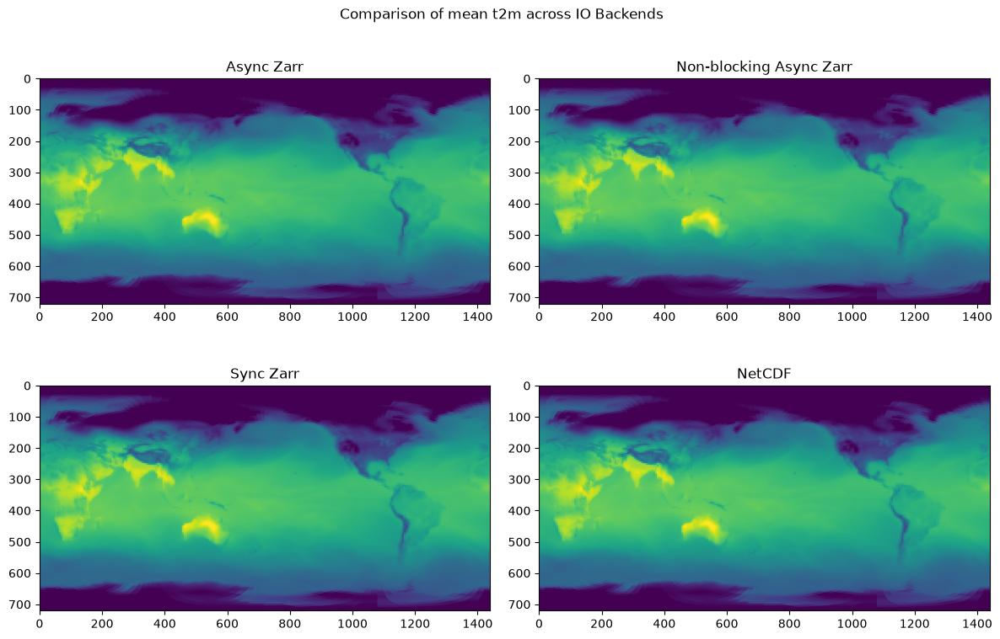

IO Backend Performance¶
Leverage different IO backends for storing inference results.
This example explores IO backends inside Earth2Studio and how they can be used to write data to different formats / locations. The IO is a core part of any inference pipeline and depending on the desired target, can dramatically impact performance. This example will help navigate users through the use of different IO backend APIs in a simple workflow.
In this example you will learn:
- Initializing, creating arrays and writing with the Zarr IO backend
- Initializing, creating arrays and writing with the NetCDF IO backend
- Initializing and writing with the Asynchronous Non-blocking Zarr IO backend
- Writing versioned output with the Icechunk IO backend, standalone and combined with the asynchronous backend
- Discussing performance implications and strategies that can be used
Set Up¶
To demonstrate different IO, this example will use a simple ensemble workflow that we will manually create ourselves. One could use the built in workflow in Earth2Studio however, this will allow us to better understand the APIs.
We need the following components:
- Datasource: Pull data from the GFS data api
earth2studio.data.GFS. - Prognostic Model: Use the built in DLWP model
earth2studio.models.px.DLWP. - Perturbation Method: Use the standard Gaussian method
earth2studio.perturbation.Gaussian. - IO Backends: Use a few IO Backends including
earth2studio.io.AsyncZarrBackend,earth2studio.io.NetCDF4Backendandearth2studio.io.ZarrBackend.
import os
os.makedirs("outputs", exist_ok=True)
from dotenv import load_dotenv
load_dotenv() # TODO: make common example prep function
import torch
from earth2studio.data import GFS, DataSource, fetch_data
from earth2studio.io import AsyncZarrBackend, IOBackend, NetCDF4Backend, ZarrBackend
from earth2studio.models.px import DLWP, PrognosticModel
from earth2studio.perturbation import Gaussian, Perturbation
# Get the device
device = torch.device("cuda" if torch.cuda.is_available() else "cpu")
# Load the cBottle data source
package = DLWP.load_default_package()
model = DLWP.load_model(package)
model = model.to(device)
# Create the ERA5 data source
ds = GFS()
# Create perturbation method
pt = Gaussian()
Console output9 lines
/__w/earth2studio/earth2studio/.venv/lib/python3.13/site-packages/torch/cuda/__init__.py:64: FutureWarning: The pynvml package is deprecated. Please install nvidia-ml-py instead. If you did not install pynvml directly, please report this to the maintainers of the package that installed pynvml for you.
import pynvml # type: ignore[import]
WARNING[XFORMERS]: xFormers can't load C++/CUDA extensions. xFormers was built for:
PyTorch 2.10.0+cu128 with CUDA 1208 (you have 2.13.0+cu130)
Python 3.10.19 (you have 3.13.13)
Please reinstall xformers (see https://github.com/facebookresearch/xformers#installing-xformers)
Memory-efficient attention, SwiGLU, sparse and more won't be available.
Set XFORMERS_MORE_DETAILS=1 for more details
CuPy distance computation test failed with error: cuVS >= 24.12 or pylibraft < 24.12 should be installed to use this featureCreating a Simple Ensemble Workflow¶
Start with creating a simple ensemble inference workflow. This is essentially a
simpler version of the built in ensemble workflow earth2studio.run.ensemble.
In this case, this is for an ensemble inference workflow that will predict a 5 day
forecast for Christmas 2022. Following standard Earth2Studio practices, the function
accepts initialized prognostic, data source, io backend and perturbation method.
import os
import time
from datetime import datetime, timedelta
import numpy as np
from tqdm import tqdm
from earth2studio.utils.coords import map_coords, split_coords
from earth2studio.utils.time import to_time_array
times = [datetime(2024, 1, 1)]
nsteps = 20 # Assuming 6-hour time steps
def christmas_five_day_ensemble(
times: list[datetime],
nsteps: int,
prognostic: PrognosticModel,
data: DataSource,
io: IOBackend,
perturbation: Perturbation,
nensemble: int = 8,
device: str = "cuda",
) -> None:
"""Ensemble inference example"""
# ==========================================
# Fetch Initialization Data
prognostic_ic = prognostic.input_coords()
times = to_time_array(times)
x, coords0 = fetch_data(
source=data,
time=times,
variable=prognostic_ic["variable"],
lead_time=prognostic_ic["lead_time"],
device=device,
)
# ==========================================
# ==========================================
# Set up IO backend by pre-allocating arrays (not needed for AsyncZarrBackend)
total_coords = prognostic.output_coords(prognostic.input_coords()).copy()
if "batch" in total_coords:
del total_coords["batch"]
total_coords["time"] = times
total_coords["lead_time"] = np.asarray(
[
prognostic.output_coords(prognostic.input_coords())["lead_time"] * i
for i in range(nsteps + 1)
]
).flatten()
total_coords.move_to_end("lead_time", last=False)
total_coords.move_to_end("time", last=False)
total_coords = {"ensemble": np.arange(nensemble)} | total_coords
variables_to_save = total_coords.pop("variable")
io.add_array(total_coords, variables_to_save)
# ==========================================
# ==========================================
# Run inference
coords = {"ensemble": np.arange(nensemble)} | coords0.copy()
x = x.unsqueeze(0).repeat(nensemble, *([1] * x.ndim))
# Map lat and lon if needed
x, coords = map_coords(x, coords, prognostic_ic)
# Perturb ensemble
x, coords = perturbation(x, coords)
# Create prognostic iterator
model = prognostic.create_iterator(x, coords)
with tqdm(
total=nsteps + 1,
desc="Running batch inference",
position=1,
leave=False,
) as pbar:
for step, (x, coords) in enumerate(model):
# Dump result to IO, split_coords separates variables to different arrays
x, coords = map_coords(x, coords, {"variable": np.array(["t2m", "tcwv"])})
io.write(*split_coords(x, coords))
pbar.update(1)
if step == nsteps:
break
# ==========================================
def get_folder_size(folder_path: str) -> int:
"""Get folder size in megabytes"""
if os.path.isfile(folder_path):
return os.path.getsize(folder_path) / (1024 * 1024)
total_size = 0
for dirpath, dirnames, filenames in os.walk(folder_path):
for filename in filenames:
file_path = os.path.join(dirpath, filename)
total_size += os.path.getsize(file_path)
return total_size / (1024 * 1024)
Local Storage Zarr IO¶
As a base line, lets run the Zarr IO backend saving it to local disk. Local IO storage is typically preferred since we can then access the data after the inference pipeline is finished using standard libraries. Chunking play an important role on performance, both with respect to compression and also when accessing data. Here we will chunk the output data based on time and lead_time
io = ZarrBackend(
"outputs/17_io_sync.zarr",
chunks={"time": 1, "lead_time": 1},
backend_kwargs={"overwrite": True},
)
start_time = time.time()
christmas_five_day_ensemble(times, nsteps, model, ds, io, pt, device=device)
zarr_local_clock = time.time() - start_time
Console output52 lines
Fetching GFS data: 0%| | 0/7 [00:00<?, ?it/s]
Fetching GFS data: 14%|█▍ | 1/7 [00:00<00:01, 3.51it/s]
Fetching GFS data: 100%|██████████| 7/7 [00:00<00:00, 24.20it/s]
Fetching GFS data: 0%| | 0/7 [00:00<?, ?it/s]
Fetching GFS data: 14%|█▍ | 1/7 [00:00<00:01, 4.03it/s]
Fetching GFS data: 100%|██████████| 7/7 [00:00<00:00, 28.07it/s]
Running batch inference: 0%| | 0/21 [00:00<?, ?it/s]
Running batch inference: 5%|▍ | 1/21 [00:00<00:17, 1.15it/s]
Running batch inference: 10%|▉ | 2/21 [00:02<00:19, 1.03s/it]
Running batch inference: 14%|█▍ | 3/21 [00:02<00:15, 1.15it/s]
Running batch inference: 19%|█▉ | 4/21 [00:03<00:14, 1.19it/s]
Running batch inference: 24%|██▍ | 5/21 [00:04<00:12, 1.24it/s]
Running batch inference: 29%|██▊ | 6/21 [00:05<00:12, 1.24it/s]
Running batch inference: 33%|███▎ | 7/21 [00:05<00:11, 1.27it/s]
Running batch inference: 38%|███▊ | 8/21 [00:06<00:10, 1.28it/s]
Running batch inference: 43%|████▎ | 9/21 [00:07<00:09, 1.27it/s]
Running batch inference: 48%|████▊ | 10/21 [00:08<00:08, 1.28it/s]
Running batch inference: 52%|█████▏ | 11/21 [00:08<00:07, 1.33it/s]
Running batch inference: 57%|█████▋ | 12/21 [00:09<00:06, 1.30it/s]
Running batch inference: 62%|██████▏ | 13/21 [00:10<00:06, 1.31it/s]
Running batch inference: 67%|██████▋ | 14/21 [00:11<00:05, 1.32it/s]
Running batch inference: 71%|███████▏ | 15/21 [00:11<00:04, 1.32it/s]
Running batch inference: 76%|███████▌ | 16/21 [00:12<00:03, 1.30it/s]
Running batch inference: 81%|████████ | 17/21 [00:13<00:02, 1.35it/s]
Running batch inference: 86%|████████▌ | 18/21 [00:14<00:02, 1.35it/s]
Running batch inference: 90%|█████████ | 19/21 [00:14<00:01, 1.39it/s]
Running batch inference: 95%|█████████▌| 20/21 [00:15<00:00, 1.38it/s]
Running batch inference: 100%|██████████| 21/21 [00:16<00:00, 1.40it/s]print(f"\nLocal zarr store inference time: {zarr_local_clock}s")
print(
f"Uncompressed zarr store size: {get_folder_size('outputs/17_io_sync.zarr'):.2f} MB"
)
Console output2 lines
Local zarr store inference time: 16.917466402053833s
Uncompressed zarr store size: 1330.78 MBCompressed Local Storage Zarr IO¶
By default the Zarr IO backends will be uncompressed. In many instances this is fine, when data volumes are low. However, in instances that we are writing a very large amount of data or the data needs to get sent over the network to a remote store, compression is essential. With the standard Zarr backend, this will cause a very noticeable slow down, but note that the output store will be 3x smaller!
import zarr
io = ZarrBackend(
"outputs/17_io_sync_compressed.zarr",
chunks={"time": 1, "lead_time": 1},
backend_kwargs={"overwrite": True},
zarr_codecs=zarr.codecs.BloscCodec(
cname="zstd", clevel=3, shuffle=zarr.codecs.BloscShuffle.shuffle
), # Zarrs default
)
start_time = time.time()
christmas_five_day_ensemble(times, nsteps, model, ds, io, pt, device=device)
zarr_local_clock = time.time() - start_time
Console output52 lines
Fetching GFS data: 0%| | 0/7 [00:00<?, ?it/s]
Fetching GFS data: 14%|█▍ | 1/7 [00:00<00:01, 5.39it/s]
Fetching GFS data: 100%|██████████| 7/7 [00:00<00:00, 37.54it/s]
Fetching GFS data: 0%| | 0/7 [00:00<?, ?it/s]
Fetching GFS data: 29%|██▊ | 2/7 [00:00<00:00, 9.22it/s]
Fetching GFS data: 100%|██████████| 7/7 [00:00<00:00, 31.07it/s]
Running batch inference: 0%| | 0/21 [00:00<?, ?it/s]
Running batch inference: 5%|▍ | 1/21 [00:00<00:18, 1.11it/s]
Running batch inference: 10%|▉ | 2/21 [00:02<00:19, 1.03s/it]
Running batch inference: 14%|█▍ | 3/21 [00:03<00:19, 1.08s/it]
Running batch inference: 19%|█▉ | 4/21 [00:04<00:18, 1.11s/it]
Running batch inference: 24%|██▍ | 5/21 [00:05<00:17, 1.11s/it]
Running batch inference: 29%|██▊ | 6/21 [00:06<00:17, 1.14s/it]
Running batch inference: 33%|███▎ | 7/21 [00:07<00:15, 1.14s/it]
Running batch inference: 38%|███▊ | 8/21 [00:08<00:14, 1.14s/it]
Running batch inference: 43%|████▎ | 9/21 [00:10<00:13, 1.13s/it]
Running batch inference: 48%|████▊ | 10/21 [00:11<00:12, 1.14s/it]
Running batch inference: 52%|█████▏ | 11/21 [00:12<00:11, 1.14s/it]
Running batch inference: 57%|█████▋ | 12/21 [00:13<00:10, 1.13s/it]
Running batch inference: 62%|██████▏ | 13/21 [00:14<00:09, 1.13s/it]
Running batch inference: 67%|██████▋ | 14/21 [00:15<00:07, 1.11s/it]
Running batch inference: 71%|███████▏ | 15/21 [00:16<00:06, 1.08s/it]
Running batch inference: 76%|███████▌ | 16/21 [00:17<00:05, 1.06s/it]
Running batch inference: 81%|████████ | 17/21 [00:18<00:04, 1.05s/it]
Running batch inference: 86%|████████▌ | 18/21 [00:19<00:03, 1.06s/it]
Running batch inference: 90%|█████████ | 19/21 [00:20<00:02, 1.08s/it]
Running batch inference: 95%|█████████▌| 20/21 [00:21<00:01, 1.07s/it]
Running batch inference: 100%|██████████| 21/21 [00:22<00:00, 1.06s/it]print(f"\nLocal compressed zarr store inference time: {zarr_local_clock}s")
print(
f"Compressed zarr store size: {get_folder_size('outputs/17_io_sync_compressed.zarr'):.2f} MB"
)
Console output2 lines
Local compressed zarr store inference time: 23.59328031539917s
Compressed zarr store size: 394.28 MBLocal Storage NetCDF IO¶
NetCDF offers a similar user experience but saves the output into a single netCDF file. For local storage, NetCDF it typically preferred since it keeps all outputs into a single file.
io = NetCDF4Backend("outputs/17_io_sync.nc", backend_kwargs={"mode": "w"})
start_time = time.time()
christmas_five_day_ensemble(times, nsteps, model, ds, io, pt, device=device)
nc_local_clock = time.time() - start_time
Console output22 lines
Fetching GFS data: 0%| | 0/7 [00:00<?, ?it/s]
Fetching GFS data: 14%|█▍ | 1/7 [00:00<00:01, 5.08it/s]
Fetching GFS data: 100%|██████████| 7/7 [00:00<00:00, 32.31it/s]
Fetching GFS data: 0%| | 0/7 [00:00<?, ?it/s]
Fetching GFS data: 29%|██▊ | 2/7 [00:00<00:00, 9.26it/s]
Fetching GFS data: 100%|██████████| 7/7 [00:00<00:00, 32.27it/s]
Running batch inference: 0%| | 0/21 [00:00<?, ?it/s]
Running batch inference: 5%|▍ | 1/21 [00:00<00:18, 1.07it/s]
Running batch inference: 19%|█▉ | 4/21 [00:01<00:03, 4.69it/s]
Running batch inference: 38%|███▊ | 8/21 [00:01<00:01, 9.46it/s]
Running batch inference: 52%|█████▏ | 11/21 [00:01<00:00, 12.73it/s]
Running batch inference: 67%|██████▋ | 14/21 [00:01<00:00, 15.28it/s]
Running batch inference: 86%|████████▌ | 18/21 [00:01<00:00, 18.75it/s]print(f"\nLocal netcdf store inference time: {nc_local_clock}s")
print(
f"Uncompressed zarr store size: {get_folder_size('outputs/17_io_sync.nc'):.2f} MB"
)
Console output2 lines
Local netcdf store inference time: 2.2246856689453125s
Uncompressed zarr store size: 1330.79 MBIn Memory Zarr IO¶
One way we can speed up IO is to save outputs to in-memory stores. In-memory stores more limited in size depending on the hardware being used. Also one needs to be careful with in memory stores, once the Python object is deleted the data is gone.
io = ZarrBackend(
chunks={"time": 1, "lead_time": 1}, backend_kwargs={"overwrite": True}
) # Not path = in memory for Zarr
start_time = time.time()
christmas_five_day_ensemble(times, nsteps, model, ds, io, pt, device=device)
zarr_memory_clock = time.time() - start_time
Console output52 lines
Fetching GFS data: 0%| | 0/7 [00:00<?, ?it/s]
Fetching GFS data: 14%|█▍ | 1/7 [00:00<00:01, 6.00it/s]
Fetching GFS data: 100%|██████████| 7/7 [00:00<00:00, 41.12it/s]
Fetching GFS data: 0%| | 0/7 [00:00<?, ?it/s]
Fetching GFS data: 14%|█▍ | 1/7 [00:00<00:01, 4.45it/s]
Fetching GFS data: 100%|██████████| 7/7 [00:00<00:00, 30.61it/s]
Running batch inference: 0%| | 0/21 [00:00<?, ?it/s]
Running batch inference: 5%|▍ | 1/21 [00:00<00:11, 1.82it/s]
Running batch inference: 10%|▉ | 2/21 [00:01<00:10, 1.73it/s]
Running batch inference: 14%|█▍ | 3/21 [00:01<00:09, 1.83it/s]
Running batch inference: 19%|█▉ | 4/21 [00:02<00:09, 1.77it/s]
Running batch inference: 24%|██▍ | 5/21 [00:02<00:08, 1.83it/s]
Running batch inference: 29%|██▊ | 6/21 [00:03<00:08, 1.80it/s]
Running batch inference: 33%|███▎ | 7/21 [00:03<00:07, 1.84it/s]
Running batch inference: 38%|███▊ | 8/21 [00:04<00:07, 1.82it/s]
Running batch inference: 43%|████▎ | 9/21 [00:04<00:06, 1.84it/s]
Running batch inference: 48%|████▊ | 10/21 [00:05<00:06, 1.78it/s]
Running batch inference: 52%|█████▏ | 11/21 [00:06<00:05, 1.79it/s]
Running batch inference: 57%|█████▋ | 12/21 [00:06<00:05, 1.77it/s]
Running batch inference: 62%|██████▏ | 13/21 [00:07<00:04, 1.80it/s]
Running batch inference: 67%|██████▋ | 14/21 [00:07<00:03, 1.79it/s]
Running batch inference: 71%|███████▏ | 15/21 [00:08<00:03, 1.81it/s]
Running batch inference: 76%|███████▌ | 16/21 [00:08<00:02, 1.80it/s]
Running batch inference: 81%|████████ | 17/21 [00:09<00:02, 1.82it/s]
Running batch inference: 86%|████████▌ | 18/21 [00:10<00:01, 1.77it/s]
Running batch inference: 90%|█████████ | 19/21 [00:10<00:01, 1.76it/s]
Running batch inference: 95%|█████████▌| 20/21 [00:11<00:00, 1.76it/s]
Running batch inference: 100%|██████████| 21/21 [00:11<00:00, 1.80it/s]Console output1 line
In memory zarr store inference time: 12.203267335891724sCompressed Local Async Zarr IO¶
The async Zarr IO backend is an advanced IO backend designed to offer async Zarr 3.0 writes to in-memory, local and remote data stores. This data source is ideal when large volumes of data are needed to be written and the users want to mask the IO with the forward execution of the model.
Because this IO backend relies on both async and multi-threading, it has a different
initialization pattern than others.
The main difference being that this backend does not use the add_array API, rather
users specify parallel_coords in the constructor that denote coords that slices will
be written to during inference.
Typically this might be time, lead_time and ensemble.
parallel_coords = {
"time": np.array(times, dtype=np.datetime64),
"lead_time": np.array(
[timedelta(hours=6 * i) for i in range(nsteps + 1)], dtype=np.timedelta64
),
}
io = AsyncZarrBackend(
"outputs/17_io_async.zarr",
parallel_coords=parallel_coords,
zarr_codecs=zarr.codecs.BloscCodec(
cname="zstd", clevel=3, shuffle=zarr.codecs.BloscShuffle.shuffle
),
)
start_time = time.time()
christmas_five_day_ensemble(times, nsteps, model, ds, io, pt, device=device)
zarr_async_clock = time.time() - start_time
Console output52 lines
Fetching GFS data: 0%| | 0/7 [00:00<?, ?it/s]
Fetching GFS data: 14%|█▍ | 1/7 [00:00<00:01, 4.97it/s]
Fetching GFS data: 100%|██████████| 7/7 [00:00<00:00, 34.62it/s]
Fetching GFS data: 0%| | 0/7 [00:00<?, ?it/s]
Fetching GFS data: 14%|█▍ | 1/7 [00:00<00:01, 5.01it/s]
Fetching GFS data: 100%|██████████| 7/7 [00:00<00:00, 33.67it/s]
Running batch inference: 0%| | 0/21 [00:00<?, ?it/s]
Running batch inference: 5%|▍ | 1/21 [00:00<00:04, 4.10it/s]
Running batch inference: 10%|▉ | 2/21 [00:00<00:06, 2.98it/s]
Running batch inference: 14%|█▍ | 3/21 [00:01<00:06, 2.74it/s]
Running batch inference: 19%|█▉ | 4/21 [00:01<00:06, 2.54it/s]
Running batch inference: 24%|██▍ | 5/21 [00:01<00:05, 2.74it/s]
Running batch inference: 29%|██▊ | 6/21 [00:02<00:05, 2.74it/s]
Running batch inference: 33%|███▎ | 7/21 [00:02<00:05, 2.76it/s]
Running batch inference: 38%|███▊ | 8/21 [00:02<00:04, 2.64it/s]
Running batch inference: 43%|████▎ | 9/21 [00:03<00:04, 2.73it/s]
Running batch inference: 48%|████▊ | 10/21 [00:03<00:04, 2.65it/s]
Running batch inference: 52%|█████▏ | 11/21 [00:04<00:03, 2.65it/s]
Running batch inference: 57%|█████▋ | 12/21 [00:04<00:03, 2.55it/s]
Running batch inference: 62%|██████▏ | 13/21 [00:04<00:03, 2.58it/s]
Running batch inference: 67%|██████▋ | 14/21 [00:05<00:02, 2.56it/s]
Running batch inference: 71%|███████▏ | 15/21 [00:05<00:02, 2.60it/s]
Running batch inference: 76%|███████▌ | 16/21 [00:05<00:01, 2.69it/s]
Running batch inference: 81%|████████ | 17/21 [00:06<00:01, 2.72it/s]
Running batch inference: 86%|████████▌ | 18/21 [00:06<00:01, 2.59it/s]
Running batch inference: 90%|█████████ | 19/21 [00:07<00:00, 2.62it/s]
Running batch inference: 95%|█████████▌| 20/21 [00:07<00:00, 2.62it/s]
Running batch inference: 100%|██████████| 21/21 [00:07<00:00, 2.65it/s]print(f"\nAsync zarr store inference time: {zarr_async_clock}s")
print(
f"Compressed async zarr store size: {get_folder_size('outputs/17_io_async.zarr'):.2f} MB"
)
Console output2 lines
Async zarr store inference time: 8.495021104812622s
Compressed async zarr store size: 394.26 MBCompressed Local Non-Blocking Async Zarr IO¶
That was faster than the normal Zarr method, even the uncompressed version making it comparable to NetCDF, but we can still improve with this IO backend. A unique feature of this particular backend is running in non-blocking mode, namely IO writes will be placed onto other threads. Users do need to be careful with this to both ensure data is not mutated while the IO backend is working to move the data off the GPU, but also to make sure to wait for write threads to finish before the object is deleted.
Note that this backend allows Zarr to be comparable to uncompressed NetCDF even 3x compression!
io = AsyncZarrBackend(
"outputs/17_io_nonblocking_async.zarr",
parallel_coords=parallel_coords,
blocking=False,
zarr_codecs=zarr.codecs.BloscCodec(
cname="zstd", clevel=3, shuffle=zarr.codecs.BloscShuffle.shuffle
),
)
start_time = time.time()
christmas_five_day_ensemble(times, nsteps, model, ds, io, pt, device=device)
# IMPORTANT: Make sure to call close to ensure IO backend threads have finished!
io.close()
zarr_nonblocking_async_clock = time.time() - start_time
Console output30 lines
Fetching GFS data: 0%| | 0/7 [00:00<?, ?it/s]
Fetching GFS data: 14%|█▍ | 1/7 [00:00<00:01, 5.15it/s]
Fetching GFS data: 100%|██████████| 7/7 [00:00<00:00, 34.22it/s]
Fetching GFS data: 0%| | 0/7 [00:00<?, ?it/s]
Fetching GFS data: 14%|█▍ | 1/7 [00:00<00:01, 4.90it/s]
Fetching GFS data: 100%|██████████| 7/7 [00:00<00:00, 34.20it/s]
Running batch inference: 0%| | 0/21 [00:00<?, ?it/s]
Running batch inference: 10%|▉ | 2/21 [00:00<00:02, 6.77it/s]
Running batch inference: 19%|█▉ | 4/21 [00:00<00:02, 5.74it/s]
Running batch inference: 29%|██▊ | 6/21 [00:01<00:02, 5.61it/s]
Running batch inference: 38%|███▊ | 8/21 [00:01<00:02, 5.49it/s]
Running batch inference: 48%|████▊ | 10/21 [00:01<00:02, 5.39it/s]
Running batch inference: 57%|█████▋ | 12/21 [00:02<00:01, 5.25it/s]
Running batch inference: 67%|██████▋ | 14/21 [00:02<00:01, 5.60it/s]
Running batch inference: 76%|███████▌ | 16/21 [00:02<00:00, 5.43it/s]
Running batch inference: 86%|████████▌ | 18/21 [00:03<00:00, 5.30it/s]
Running batch inference: 95%|█████████▌| 20/21 [00:03<00:00, 5.26it/s]print(
f"\nNon-blocking async zarr store inference time: {zarr_nonblocking_async_clock}s"
)
print(
f"Compressed non-blocking async zarr store size: {get_folder_size('outputs/17_io_nonblocking_async.zarr'):.2f} MB"
)
Console output2 lines
Non-blocking async zarr store inference time: 4.697338104248047s
Compressed non-blocking async zarr store size: 394.26 MBVersioned Icechunk IO¶
The earth2studio.io.IceChunkBackend writes to an
Icechunk repository, which layers version control on top of a
Zarr store: writes accumulate in a transactional session and become durable when
committed as an immutable snapshot. This is useful for keeping an auditable history
of a store, or safely rolling back a bad run. The API matches ZarrBackend with
one addition: call commit to persist. Unlike ZarrBackend, write is
non-blocking by default (read/__getitem__/commit flush pending writes
first); pass blocking=True to write synchronously instead. This requires the
icechunk optional dependency, installed with the data extra
(Python >= 3.12).
import icechunk
from earth2studio.io import IceChunkBackend
io = IceChunkBackend("outputs/17_io_icechunk")
start_time = time.time()
christmas_five_day_ensemble(times, nsteps, model, ds, io, pt, device=device)
# Writes are only durable once committed as a snapshot
io.commit("Christmas 2022 ensemble")
icechunk_clock = time.time() - start_time
print(f"\nIcechunk store inference time: {icechunk_clock}s")
print(f"Icechunk repository size: {get_folder_size('outputs/17_io_icechunk'):.2f} MB")
Non-Blocking Async Zarr into Icechunk¶
The two approaches compose: an Icechunk session store is a Zarr store, so it can be
passed to the async backend's store parameter. This combines non-blocking writes
with transactional snapshots. The ordering at the end matters — close() must
complete before commit(), otherwise in-flight writes are silently excluded from
the snapshot.
repo = icechunk.Repository.open_or_create(
icechunk.local_filesystem_storage("outputs/17_io_icechunk_async")
)
session = repo.writable_session("main")
io = AsyncZarrBackend(
None,
parallel_coords=parallel_coords,
blocking=False,
store=session.store,
zarr_codecs=zarr.codecs.BloscCodec(
cname="zstd", clevel=3, shuffle=zarr.codecs.BloscShuffle.shuffle
),
)
start_time = time.time()
christmas_five_day_ensemble(times, nsteps, model, ds, io, pt, device=device)
# IMPORTANT: close first to flush in-flight writes, then commit the snapshot
io.close()
session.commit("Christmas 2022 ensemble")
icechunk_async_clock = time.time() - start_time
print(f"\nNon-blocking async Icechunk inference time: {icechunk_async_clock}s")
print(
f"Compressed Icechunk repository size: {get_folder_size('outputs/17_io_icechunk_async'):.2f} MB"
)

Remote Non-Blocking Async Zarr IO¶
This IO backend can also write directly to remote object storage through the
store parameter, which accepts a plain local path, a store URL (s3://,
gs://, file://), an obstore store instance, or an already constructed
zarr store. Cloud writes go through obstore's native put / multipart upload,
which is faster and more robust than routing through fsspec sessions.
For sake of example, lets have a look at what writing to a remote store would
require. Compression is a must in this instance, since we need to minimize the
data transfer over the network. Credentials are resolved from the environment
by obstore, or can be passed explicitly via store_kwargs as done here.
Lastly we can increase the max number of thread workers with the pool_size
parameter to further boost performance.
if "S3FS_KEY" in os.environ and "S3FS_SECRET" in os.environ:
io = AsyncZarrBackend(
None,
parallel_coords=parallel_coords,
store="s3://earth2studio/ci/example/17_io_async.zarr",
store_kwargs={
"access_key_id": os.environ["S3FS_KEY"],
"secret_access_key": os.environ["S3FS_SECRET"],
"endpoint": os.environ.get("S3FS_ENDPOINT", None),
},
blocking=False,
pool_size=16,
zarr_codecs=zarr.codecs.BloscCodec(
cname="zstd", clevel=3, shuffle=zarr.codecs.BloscShuffle.shuffle
),
)
christmas_five_day_ensemble(times, 4, model, ds, io, pt, device=device)
# IMPORTANT: Make sure to call close to ensure IO backend threads have finished!
io.close()
# To clean up the zarr store you can use
# import s3fs
# fs = s3fs.S3FileSystem(
# key=os.environ["S3FS_KEY"],
# secret=os.environ["S3FS_SECRET"],
# client_kwargs={"endpoint_url": os.environ.get("S3FS_ENDPOINT", None)},
# )
# fs.rm("earth2studio/ci/example/17_io_async.zarr", recursive=True)
Post-Processing¶
Lastly, we can plot the each of the local Zarr stores to verify that indeed they are the same.
import matplotlib.pyplot as plt
import xarray as xr
# Load the datasets
ds_async = xr.open_zarr("outputs/17_io_async.zarr", consolidated=False)
ds_nonblocking = xr.open_zarr(
"outputs/17_io_nonblocking_async.zarr", consolidated=False
)
ds_sync = xr.open_zarr("outputs/17_io_sync.zarr")
ds_nc = xr.open_dataset("outputs/17_io_sync.nc")
# Create a 2x2 subplot grid
fig, axes = plt.subplots(2, 2, figsize=(12, 8))
fig.suptitle("Comparison of mean t2m across IO Backends")
# Plot t2m from each dataset
axes[0, 0].imshow(
ds_async.t2m.isel(time=0, lead_time=8).mean(dim="ensemble"), vmin=250, vmax=320
)
axes[0, 0].set_title("Async Zarr")
axes[0, 1].imshow(
ds_nonblocking.t2m.isel(time=0, lead_time=8).mean(dim="ensemble"),
vmin=250,
vmax=320,
)
axes[0, 1].set_title("Non-blocking Async Zarr")
axes[1, 0].imshow(
ds_sync.t2m.isel(time=0, lead_time=8).mean(dim="ensemble"), vmin=250, vmax=320
)
axes[1, 0].set_title("Sync Zarr")
axes[1, 1].imshow(
ds_nc.t2m.isel(time=0, lead_time=8).mean(dim="ensemble"), vmin=250, vmax=320
)
axes[1, 1].set_title("NetCDF")
plt.tight_layout()
plt.savefig("outputs/17_io_performance.jpg", bbox_inches="tight")